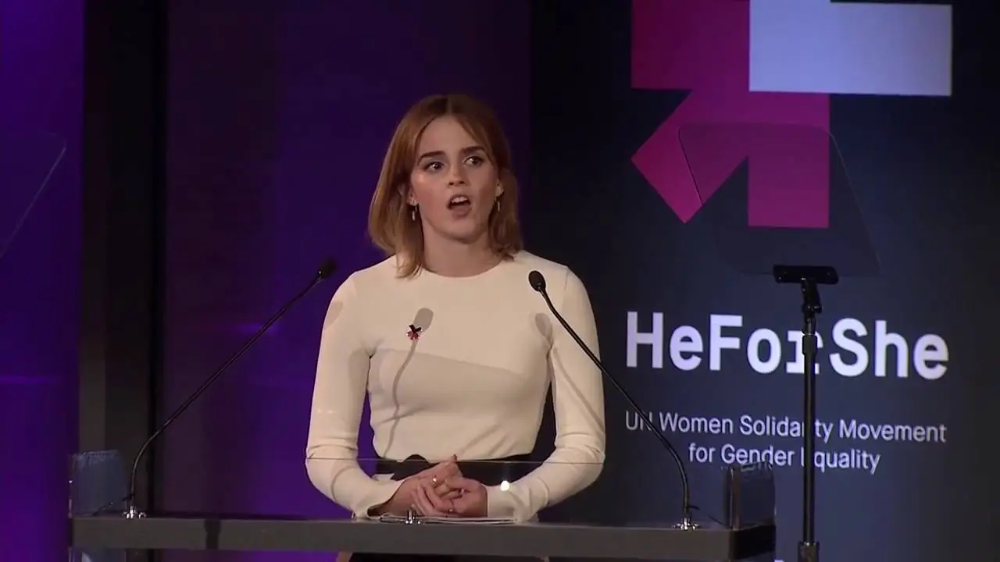

Emma Watson, une icône du 21e siècle
Née le 15 avril 1990 à Paris, Emma Watson est surtout connue pour sa carrière d'actrice (Hermione Granger dans la saga Harry Potter). Pourtant, elle a effectué d'autres métiers prestigieux, comme mannequin ou égérie des marques Burberry et Lancôme. Mais aussi et bien sûr, elle est mondialement connue pour être la porte-parole du mouvement féministe HeForShe.

Emma Watson lors d'un discours pour l'association HeForShe
Carrière
Sa carrière commence à l'âge de 10 ans, et dure jusqu'en 2011 pour suivre l'intégralité des films Harry Potter en tant qu'Hermione Granger. Durant cette période, elle devient vite une star et participe à beaucoup d'évènements variés comme des défilés de mode, et paraît à la une de beaucoup de magazines. Elle marquera une pause dans sa carrière cinématographique avant de la reprendre en 2017 avec The Circle et La Belle et la Bête.
Une nouvelle figure du féminisme
Elle s'investit énormément dans l'humanitaire, mais surtout dans la défense des droits des femmes. Elle est particulièrement active dans la campagne HeForShe, dans laquelle elle milite pour l'égalité des sexes. Nommée Ambassadrice de bonne volonté d'ONU Femmes en 2014, ce qui lui permettra de tenir un célèbre discours aux Nations Unies en 2016. En janvier 2018 lors de l'émergence du mouvement Time's Up, elle déclare que ce qui lui importe, c'est de m'assurer qu'il s'agisse d'un mouvement global
.
Elle insiste sur le fait qu'il faut que "des femmes et des hommes [de] tous les domaines professionnels" doivent s'investir car les phénomènes de harcèlement sexuel se produisent partout. Elle fait également plusieurs dons à des associations et à des fonds tel que Justice and Equality, à laquelle elle fait don d'un million d'euros. Plus récemment, elle est devenue membre du conseil d'administration de Kering, un groupe français de luxe depuis juin 2020.
Zoom sur le discours
Après sa nomination en tant qu'Ambassadrice de bonne volonté de l'ONU Femmes, Emma Watson se voit offrir une opportunité en or. Elle est invitée à tenir un discours aux Nations Unies le 20 septembre 2014 pour soutenir le projet de la campagne HeForShe, mais aussi aborder le sujet féministe en général. Elle y dénonce alors les agressions sexuelles sur les campus universitaires anglais, mais elle tient également à ce qu'un maximum de personnes, femmes et hommes, se mobilisent pour cette cause. C'est pourquoi, tout en dédiabolisant la cause féministe qui est "trop souvent associée à la haine des hommes", elle invite celles et ceux qui peuvent agir à le faire.
De plus, elle insiste sur le fait que, dans le monde, aucun pays ne propose l'égalité des revenus entre femmes et hommes. Elle soulève également le problème de l'éducation, notamment en Afrique où les filles ne peuvent recevoir un bon niveau d'éducation faute de moyens et de mobilisation. Pour conclure, elle nous invite tous à nous manifester pour faire entendre nos idées au sein du mouvement HeForShe. Elle finit par une simple question : "Si je ne le fais pas, qui le fera ? Si je ne le fais pas maintenant, alors quand ?". Cette sentence lourde de sens est encore d'actualité, malgré les efforts qu'elle et les organisations qu'elle soutient fournissent.